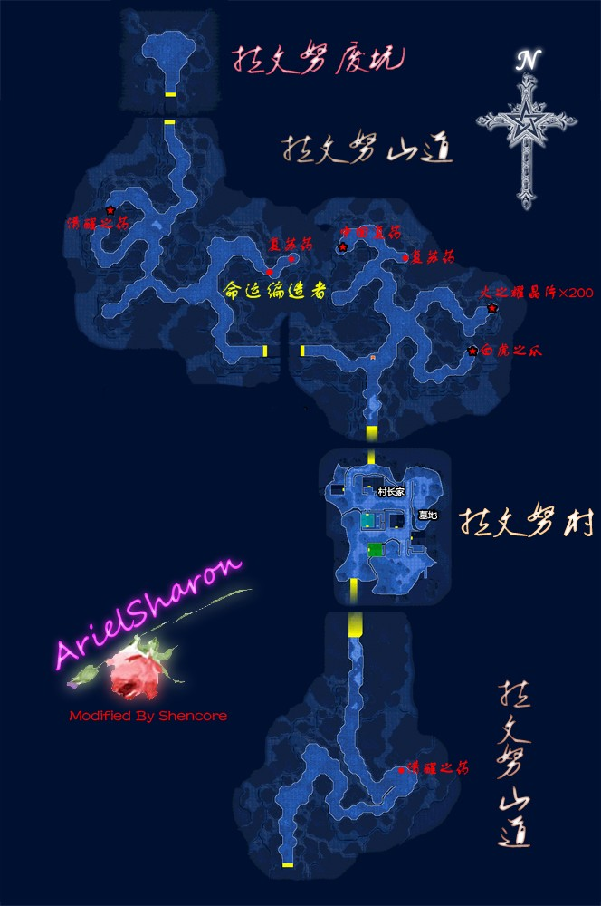

第五章 守护的信念
本章主要在柏斯进行，有很多关于阿加特的谜团揭晓。
{kind=link}
{kind=link}

{kind=link}
{kind=link}
{kind=link}
{kind=link}
◆主线任务1 通缉魔兽的集体讨伐◆ BP：6+3,15000mira
柏斯游击士协会没什么特殊任务，主线是打完古罗尼峰、琥珀之塔和迷雾峡谷的三个通缉魔兽。打完三个通缉魔兽之后将统一结算主线BP。有几个支线任务可以一起做了。顺便：继承过FC存档且帮助过思潘斯老人的话现在去柏斯超市会获赠还魂粉一个。
☆柏斯市区有以下料理：奇尔榭酒馆（黄金调味饭、红莲炖兽肉）；柏斯超市的卡特丽亚蛋糕屋（直角蛋糕、提神果冻）☆
●第五章支线任务①● 帝国大使的委托 BP：5,10000mira
又是怪盗B任务。去富莱登酒店203室接任务，接着调查以下地点：导力器工房LUCIR后面的花盆；
游击士协会的三楼打开的书本；飞艇坪的起重车；最后在七曜教会二楼礼拜堂的圣典中发现徽章，交给大使会取得铁骑功勋章。
●第五章支线任务②● 美味的调制 BP3+2,5500+1500mira
安特洛丝餐厅厨房接任务，要求找六种魔兽食材，如果之前继承过FC存档并且在FC中帮助过奥维德的话，现在马上去柏斯超市南门外跟他对话，他会提供其中三种，（同时BP+2）接着再弄魔兽鸟肉、魔兽鸟蛋、魔兽眼珠各十个即可，不够的话从西门出去打暴躁气泡就会掉落。魔兽鸟蛋在东柏斯街道的啄木鸟可以打到。
●第五章支线任务③● 失踪的大小姐BP：5+2,6000mira
在安特洛丝餐厅跟蕾娜对话接任务，随后经过西柏斯街道-古罗尼山道前往古罗尼关所。路上会遇到主线任务的通缉魔兽刀刃毒牙，敌人物理攻击能力很强，尽量不要接近，远处用魔法打死即可。
★随后前往古罗尼关所队长室跟士兵迈奇对话获得【牌技师杰克第七卷】★
去旁边的房间就会找到失踪的大小姐了，对话选项“芙拉瑟小姐真是个胆小鬼呢” BP+2，对话后自动回到柏斯，任务完成后获得奖励饰品龙卷扇（毒、冻结无效化）。此时回协会报告，如果之前都完美BP的话，此时应该升到了C级，获得奖励钓鱼竿-碧玉之星（可以使用全部鱼饵的高级鱼竿）。
接着经安塞尔新街前往琥珀之塔打通缉魔兽邪骨章鱼，注意敌人受到攻击后会分裂，多用范围攻击速战速决。回柏斯之后从东门出去沿着东柏斯街道走，路上的呼啸母兽可以刷HP4的回路。随后去迷雾峡谷打第三个通缉魔兽幽灵碑文，注意防御石化和冰冻。打完三个通缉魔兽之后剧情选项“魔兽变胆怯了” BP+3，随后回到柏斯游击士协会。
{kind=link}
{kind=link}
◆主线任务2 古代龙袭击事件◆ BP3+3,2000mira
进入协会后发生剧情，选择“先决定任务分配” BP+3。阿加特暂时离队。经过西柏斯街道前往拉文努村，接着往北走进入拉文努废坑，进入废坑中部发生剧情，剧情后前往村长家旁边的小屋子（阿加特的家），之后走到村口选择“回柏斯市”自动回到柏斯。
☆拉文努村月之小道亭有售豪华饮料『乐园』☆
{kind=link}
◆主线任务3 古代龙的追击◆ BP：7，8000mira
去飞艇坪，选择“等待军舰到来”，接着是漫长的剧情，埃尔赛尤号上与所有人对话后继续剧情，接着去甲板继续剧情。又是一段漫长的剧情后阿加特和提妲强制入队。
之后准备一下装备就出发打本章BOSS吧，经东柏斯街道进入迷雾峡谷，到东边的小屋跟维姆拉大叔对话，接着去西边再找到维姆拉大叔，进入古龙的居所。
{kind=link}
路上注意防冰冻，古代龙吃斗魂和时间减速，龙驱动的全屏空属性魔法不能被打断，注意回复。打完之后第五章主线结束。取得报酬BP，此时如果之前完美BP的话会升到C+级，获得奖励饰品-神圣挂链（全状态异常无效，不含“能力低下”）。剧情后会选择一次队员，选中的将与艾丝蒂尔共同行动，其余的自动前往瓦雷利亚湖畔的川蝉亭。需要更换队员的话去那里跟队员对话即可。（这是PC版的设计，PSP版在这里还可以调整全体队员的装备）。
先到南街区路西的民宅跟塞西尔婆婆对话，得知她在找库瓦诺老人，接着去川蝉亭跟湖边的库瓦诺老人对话，（可以趁机在川蝉亭里面的更换队员、调整装备），再回柏斯跟塞西尔婆婆对话，会获得钓鱼竿——湖泊大帝II世，以后会用到的。下面做一些支线吧。
☆这期间可以去迷雾峡谷东部与维姆拉大叔对话获得黑暗火锅•觉悟（队伍中随机一人HP变为1、CP降为0，其余三人CP+100）；川蝉亭有售东方风味烤鱼、火烧暴走鱼☆
●第五章支线任务④● 遥远的记忆 BP：5,3500mira
在奇尔榭酒馆与委托人科尔娜对话接任务，把照片给梅贝尔市长和莉拉(市长身边的女仆)看过之后，就会得知一切的真相。
●第五章支线任务⑤● 护送商人 BP：3+2,5000+5000mira
南街区找到委托人，在北街区西口跟委托人汇合之后出发去拉文努村，路上不发生战斗的话BP+2。
★这时，与拉文努村的孩子鲁依对话会获得【牌技师杰克第八卷】★
●第五章支线任务⑥● 拉文努山道的通缉魔兽 BP：5,6500mira
魔兽是命运编造者（FC也在附近打过），会石化攻击、会打断吟唱中的魔法。（特别的，这个任务其实在本章BOSS战之前就能打了，但是这时候打正好顺路）
●第五章支线任务⑦● 废坑扫荡战（隐藏任务）BP：6,8000mira
直接去拉文努废坑门口跟士兵对话就会触发这个隐藏任务，进入里面消灭五个机器人即可完成任务，注意有废坑里面几个宝箱之前拿不到，现在可以拿一下。
★现在经过柏斯去哈肯大门，与门口的卡尔科斯对话获得【牌技师杰克第九卷】★
P.S.这个卡尔科斯其实也是一个名气不小的NPC。
☆哈肯大门食堂有售咕噜咕噜热视线☆
支线全部完毕了，注意这之后很长时间无法补充装备食材，建议现在补充完。对接下来战斗没有信心的，尤其是PSP玩家建议购买40个粗碎岩盐、黑胡椒和红椒粉，以及24个里脊肉，后面需要用来合成强力攻击料理；喜欢直接用全屏攻击魔法的这里就不必购买了。
去川蝉亭跟同伴对话选择“没有事情了”，即可开始休假。之后操纵小艾去小码头发生剧情，第五章结束。
本章主线任务3 支线任务6 隐藏任务1 全BP值60 牌技师3本
此时完美BP 272
=================第五章 结束=================